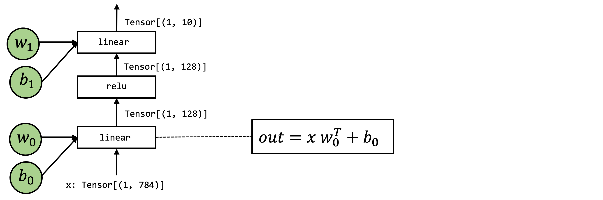

Understand Relax Abstraction#
Relax is a graph abstraction used in Apache TVM, which helps to end-to-end optimize ML models. The principal objective of Relax is to depict the structure and data flow of ML models, including the dependencies and relationships between different parts of the model, as well as how to execute the model on hardware.
End to End Model Execution#
In this chapter, we will use the following model as an example. This is a two-layer neural network that consists of two linear operations with relu activation.
{kind=link}

High-Level Operations Representation#
Let us begin by reviewing a Numpy implementation of the model.
def numpy_mlp(data, w0, b0, w1, b1):
lv0 = data @ w0 + b0
lv1 = np.maximum(lv0, 0)
lv2 = lv1 @ w1 + b1
return lv2
The above example code shows the high-level array operations to perform the end-to-end model execution. Of course, we can rewrite the above code using Relax as follows:
from tvm.script import relax as R
@R.function
def relax_mlp(
data: R.Tensor(("n", 784), dtype="float32"),
w0: R.Tensor((784, 128), dtype="float32"),
b0: R.Tensor((128,), dtype="float32"),
w1: R.Tensor((128, 10), dtype="float32"),
b1: R.Tensor((10,), dtype="float32"),
) -> R.Tensor(("n", 10), dtype="float32"):
with R.dataflow():
lv0 = R.matmul(data, w0) + b0
lv1 = R.nn.relu(lv0)
lv2 = R.matmul(lv1, w1) + b1
R.output(lv2)
return lv2
Low-Level Integration#
However, again from the pov of machine learning compilation (MLC), we would like to see through the details under the hood of these array computations.
For the purpose of illustrating details under the hood, we will again write examples in low-level numpy:
We will use a loop instead of array functions when necessary to demonstrate the possible loop computations. When possible, we always explicitly allocate arrays via numpy.empty and pass them around. The code block below shows a low-level numpy implementation of the same model.
def lnumpy_linear(X: np.ndarray, W: np.ndarray, B: np.ndarray, Z: np.ndarray):
n, m, K = X.shape[0], W.shape[1], X.shape[1]
Y = np.empty((n, m), dtype="float32")
for i in range(n):
for j in range(m):
for k in range(K):
if k == 0:
Y[i, j] = 0
Y[i, j] = Y[i, j] + X[i, k] * W[k, j]
for i in range(n):
for j in range(m):
Z[i, j] = Y[i, j] + B[j]
def lnumpy_relu0(X: np.ndarray, Y: np.ndarray):
n, m = X.shape
for i in range(n):
for j in range(m):
Y[i, j] = np.maximum(X[i, j], 0)
def lnumpy_mlp(data, w0, b0, w1, b1):
n = data.shape[0]
lv0 = np.empty((n, 128), dtype="float32")
lnumpy_linear(data, w0, b0, lv0)
lv1 = np.empty((n, 128), dtype="float32")
lnumpy_relu0(lv0, lv1)
out = np.empty((n, 10), dtype="float32")
lnumpy_linear(lv1, w1, b1, out)
return out
With the low-level NumPy example in mind, now we are ready to introduce an Relax abstraction for the end-to-end model execution. The code block below shows a TVMScript implementation of the model.
from tvm.script import ir as I
from tvm.script import tirx as T
from tvm.script import relax as R
@I.ir_module
class Module:
@T.prim_func(private=True)
def linear(x: T.handle, w: T.handle, b: T.handle, z: T.handle):
M, N, K = T.int64(), T.int64(), T.int64()
X = T.match_buffer(x, (M, K), "float32")
W = T.match_buffer(w, (K, N), "float32")
B = T.match_buffer(b, (N,), "float32")
Z = T.match_buffer(z, (M, N), "float32")
Y = T.alloc_buffer((M, N), "float32")
for i, j, k in T.grid(M, N, K):
with T.sblock("Y"):
v_i, v_j, v_k = T.axis.remap("SSR", [i, j, k])
with T.init():
Y[v_i, v_j] = T.float32(0.0)
Y[v_i, v_j] = Y[v_i, v_j] + X[v_i, v_k] * W[v_k, v_j]
for i, j in T.grid(M, N):
with T.sblock("Z"):
v_i, v_j = T.axis.remap("SS", [i, j])
Z[v_i, v_j] = Y[v_i, v_j] + B[v_j]
@T.prim_func(private=True)
def relu(x: T.handle, y: T.handle):
M, N = T.int64(), T.int64()
X = T.match_buffer(x, (M, N), "float32")
Y = T.match_buffer(y, (M, N), "float32")
for i, j in T.grid(M, N):
with T.sblock("Y"):
v_i, v_j = T.axis.remap("SS", [i, j])
Y[v_i, v_j] = T.max(X[v_i, v_j], T.float32(0.0))
@R.function
def main(
x: R.Tensor(("n", 784), dtype="float32"),
w0: R.Tensor((784, 256), dtype="float32"),
b0: R.Tensor((256,), dtype="float32"),
w1: R.Tensor((256, 10), dtype="float32"),
b1: R.Tensor((10,), dtype="float32")
) -> R.Tensor(("n", 10), dtype="float32"):
cls = Module
n = T.int64()
with R.dataflow():
lv = R.call_tir(cls.linear, (x, w0, b0), out_ty=R.Tensor((n, 256), dtype="float32"))
lv1 = R.call_tir(cls.relu, (lv,), out_ty=R.Tensor((n, 256), dtype="float32"))
lv2 = R.call_tir(cls.linear, (lv1, w1, b1), out_ty=R.Tensor((n, 10), dtype="float32"))
R.output(lv2)
return lv2
The above code contains kinds of functions: the primitive tensor functions (T.prim_func) and a
R.function (relax function). Relax function is a new type of abstraction representing
high-level neural network executions.
Note that the above relax module natively supports symbolic shapes, see the "n" in the
tensor shapes in main function and M, N, K in the linear function. This is
a key feature of Relax abstraction, which enables the compiler to track dynamic shape relations
globally across tensor operators and function calls.
Again it is helpful to see the TVMScript code and low-level numpy code side-by-side and check the corresponding elements, and we are going to walk through each of them in detail. Since we already learned about primitive tensor functions, we are going to focus on the high-level execution part.
Key Elements of Relax#
This section will introduce the key elements of Relax abstraction and how it enables optimization in ML compilers.
Type#
Type is the Relax representation of expression type information. It can
be TensorType, TupleType, etc. In the above example, we use TensorType
(short in R.Tensor in TVMScript) to represent the shape and dtype of the tensor of the inputs,
outputs, and intermediate results.
R.call_tir#
The R.call_tir function is a new abstraction in Relax that allows calling primitive tensor
functions in the same IRModule. This is a key feature of Relax that enables cross-level
abstractions, from high-level neural network layers to low-level tensor operations.
Taking one line from the above code as an example:
lv = R.call_tir(cls.linear, (x, w0, b0), out_ty=R.Tensor((n, 256), dtype="float32"))
To explain what does R.call_tir work, let us review an equivalent low-level numpy
implementation of the operation, as follows:
lv0 = np.empty((n, 256), dtype="float32")
lnumpy_linear(x, w0, b0, lv0)
Specifically, call_tir allocates an output tensor res, then pass the inputs and the output
to the prim_func. After executing prim_func the result is populated in res, then we can return
the result.
This convention is called destination passing, The idea is that input and output are explicitly allocated outside and passed to the low-level primitive function. This style is commonly used in low-level library designs, so higher-level frameworks can handle that memory allocation decision. Note that not all tensor operations can be presented in this style (specifically, there are operations whose output shape depends on the input). Nevertheless, in common practice, it is usually helpful to write the low-level function in this style when possible.
Dataflow Block#
Another important element in a relax function is the R.dataflow() scope annotation.
with R.dataflow():
lv = R.call_tir(cls.linear, (x, w0, b0), out_ty=R.Tensor((n, 256), dtype="float32"))
lv1 = R.call_tir(cls.relu, (lv,), out_ty=R.Tensor((n, 256), dtype="float32"))
lv2 = R.call_tir(cls.linear, (lv1, w1, b1), out_ty=R.Tensor((n, 10), dtype="float32"))
R.output(lv2)
Before we talk about the dataflow block, let us first introduce the concept of pure and side-effect. A function is pure or side-effect free if:
it only reads from its inputs and returns the result via its output
it will not change other parts of the program (such as incrementing a global counter).
For example, all R.call_tir functions are pure functions, as they only read from their inputs
and write the output to another new allocated tensor. However, the inplace operations are not
pure functions, in other words, they are side-effect functions, because they will change the existing
intermediate or input tensors.
A dataflow block is a way for us to mark the computational graph regions of the program. Specifically, within a dataflow block, all the operations need to be side-effect free. Outside a dataflow block, the operations can contain side-effect.
Note
A common question that arises is why we need to manually mark dataflow blocks instead of automatically inferring them. There are two main reasons for this approach:
Automatic inference of dataflow blocks can be challenging and imprecise, particularly when dealing with calls to packed functions (such as cuBLAS integrations). By manually marking dataflow blocks, we enable the compiler to accurately understand and optimize the program’s dataflow.
Many optimizations can only be applied within dataflow blocks. For instance, fusion optimization is limited to operations within a single dataflow block. If the compiler were to incorrectly infer dataflow boundaries, it might miss crucial optimization opportunities, potentially impacting the program’s performance.
By allowing manual marking of dataflow blocks, we ensure that the compiler has the most accurate information to work with, leading to more effective optimizations.